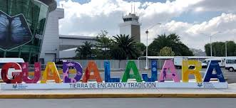
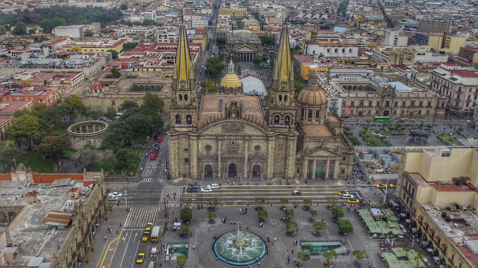

Bringing you the local flavors of Guadalajara, Jalisco. We are a family owned restaurant and will continue to be that way as we continue to serve you the best food. We support local businesses by only buying from local sources, this way we make share that our products go strainght from the farm to your table.